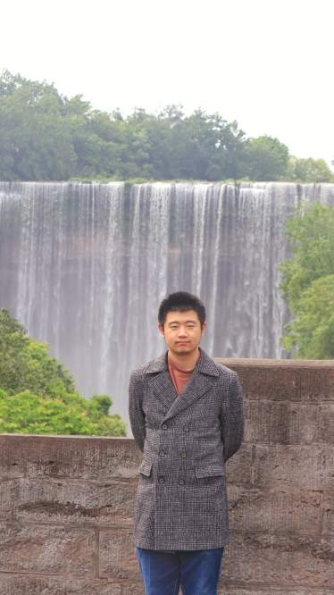

About Me

I am a lecturer in the School of Mathematical Sciences at the University of Electronic Science and Technology of China (UESTC) in Chengdu, China. I joined UESTC in September 2026.
My research focuses on real algebraic geometry and on polynomial optimization and its applications — including neural network verification, and quantum computing and quantum information.
From September 2024 to August 2026 I was a postdoctoral research fellow at the Hua Loo-Keng Center for Mathematical Sciences, AMSS, Chinese Academy of Sciences, working with Prof. Lihong Zhi and Prof. Ke Ye. Before that, from August 2023 to August 2024, I was a research fellow at CNRS@CREATE in Singapore, working with Prof. Victor Magron and Prof. Jean-Bernard Lasserre.
I received my Ph.D. in mathematics from the Academy of Mathematics and Systems Science, University of Chinese Academy of Sciences, in July 2023, under the supervision of Prof. Lihong Zhi, and my Bachelor's degree in mathematics from Sichuan University in 2018, under the guidance of Prof. Weinian Zhang.
Publications
- Sparse sum of Hermitian squares in group algebras of finite groups (with Ke Ye and Lihong Zhi), Foundations of Computational Mathematics, forthcoming. Accepted August 17, 2026.
- A Counterexample to the Optimality Conjecture in Convex Quantum Channel Optimization (Jianting Yang), Quantum 10, 2253 (2026). DOI: 10.22331/q-2026-10-28-2253.
- Verifying Properties of Binary Neural Networks Using Sparse Polynomial Optimization (with Srećko Đurašinović, Jean-Bernard Lasserre, Victor Magron, and Jun Zhao), International Conference on Learning Representations (ICLR 2025).
- The non-Archimedean Nirgendsnegativsemidefinitheitsstellensatz is not true (with Hao Liang, Sizhuo Yan, and Lihong Zhi), Israel Journal of Mathematics 267, 995–1000 (2025).
- Computing sparse Fourier sum of squares on finite abelian groups in quasi-linear time (with Ke Ye and Lihong Zhi), Applied and Computational Harmonic Analysis 73, 101686 (2024).
- Lower Bounds of Functions on Finite Abelian Groups (with Ke Ye and Lihong Zhi), COCOON 2023, Lecture Notes in Computer Science 14423, 157–170 (2024).
- A Characterization of Perfect Strategies for Mirror Games (with Sizhuo Yan, Tianshi Yu, and Lihong Zhi), Proceedings of the International Symposium on Symbolic and Algebraic Computation (ISSAC 2023), 545–554 (2023).
News & Activity
- Oct 28, 2026 My paper A Counterexample to the Optimality Conjecture in Convex Quantum Channel Optimization was published in Quantum.
- Sep 2026 I joined the School of Mathematical Sciences at UESTC as a lecturer.
- Aug 17, 2026 Our paper Sparse sum of Hermitian squares in group algebras of finite groups was accepted by Foundations of Computational Mathematics.
- Oct 16–20, 2025 Attended the 2025 Academic Annual Conference of the Chinese Mathematical Society in Binzhou.
- Aug 8–11, 2025 Attended the 15th Conference on Computer Mathematics in Harbin.
- Feb 21, 2025 Gave an invited talk at the School of Mathematical Sciences, Peking University.
- Jun 24–25, 2024 Attended SINFRA 2024 in Singapore.
- Jun 15–18, 2023 Attended the 13th Conference on Computer Mathematics in Dalian.
- Sep 5–9, 2022 Attended the POEMA Final Workshop in Paris (online).